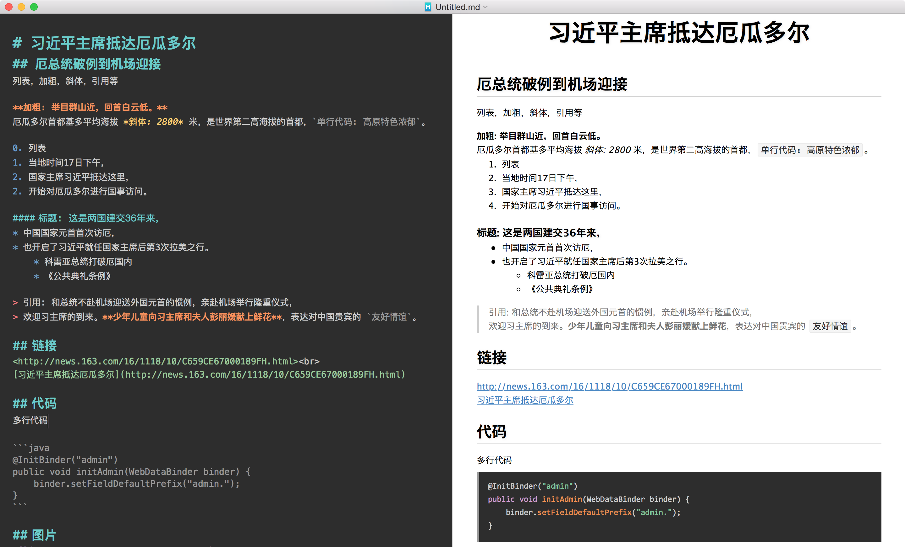
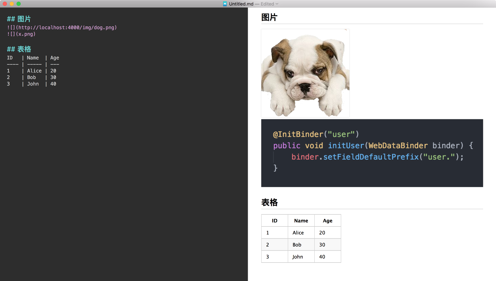

掌握以下几个标签就能使用 Markdown 随意的写出漂亮的文档了，而且可以导出为 HTML, PDF 等給其他人看:
- 标题:
# - 加粗:
** - 斜体:
* - 代码: ```
- 列表:
1.* - 链接:
[](URL)[文字](URL) - 图片:
 - 引用:
> - 换行:
2 个空格或者<br> - 表格:
下图左边为 Markdown 代码，右边为 Markdown 生成的效果，方便查看 Markdown 标签和生成的效果


标题
一级标题用 # 标题，有一个 #
二级标题有 ## 标题，有二个 #
三级标题、四级标题依此类推
加粗
把需要加粗的文字用 ** 括起来就可以了: **被加粗的内容**
斜体
把需要用斜体的文字用 * 括起来就可以了: *使用斜体的内容*
代码
多行代码块用 ``` 括起来就可以了
行内的用 ` 括起来
列表
列表分为有序列表和无序列表
- 有序列表以
数字.开头(数字后面跟.) - 无序列表以
*开头(*后面跟一个空格
链接
链接有 2 种方式
<URL>
图片
- 使用网络上的图片
 - 使用本地图片，最好和 markdown 的相对路径

引用
> 跟上引用的内容
换行
可以使用 <br> 进行换行，也可以在行尾使用 2 个空格进行换行
表格
表格相对比较复杂，语法如下
ID | Name | Age ---- | ----- | --- 1 | Alice | 20 2 | Bob | 30 3 | John | 40
创建免费博客
使用 Markdown + Github + Hexo 创建免费博客，请参考 http://xtuer.github.io/hexo-usage/